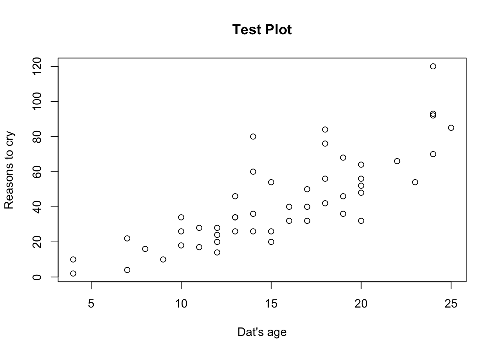

#remember to turn KNIT ON SAVE on before exporting to website
This website is to test displaying new incoming data for the upcoming field season
Sonde and t-chain data will be updated everyday to show yesterday’s data. Manual chlorophyll will be updated every few days
shiny app - 1 minute data, daily averages (be able to change how we view each variable) - t chain profiles
[1] “2024-03-29 02:32:36 EDT”

WAHOOWA! There were no missing observations on
2019-07-12 in Peter Lake.
Father Hesburgh
has cursed us! There are 2 missing observations on 2019-07-12 in Paul
Lake.
Missing times in Paul Lake: 00:45, 18:15
WAHOOWA! No outliers found in Peter Lake on
2019-07-12
du Lac has been disobeyed!
There were 2 outliers in Paul Lake for Temp_YSI on 2019-07-12
Time: 01:20 - Value: 50
Time: 02:05 - Value: 3
du Lac has been disobeyed! There were 1 outliers
in Paul Lake for pH_YSI on 2019-07-12
Time: 01:20 - Value:
17
du Lac has been disobeyed! There were 2
outliers in Paul Lake for Chl_HYLB on 2019-07-12
Time: 07:00
- Value: 20000
Time: 08:00 - Value: 20000
WAHOOWA! Last battery reading on Peter Lake:
12.2 V on 2019-07-12
CHANGE BATTERY SOON
ON Paul Lake
Time when battery power first falls below 10V:
23:05 on 2019-07-12
Last battery reading on Paul Lake: 9 V on
2019-07-12